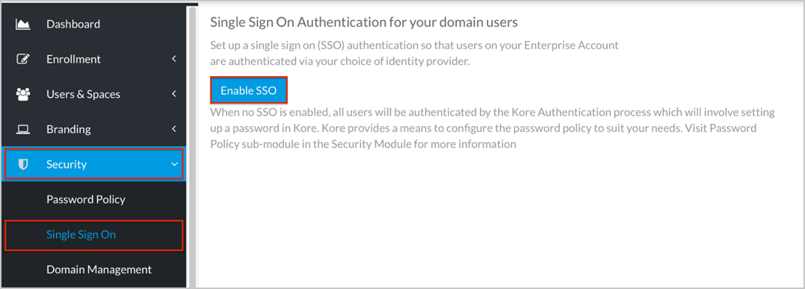
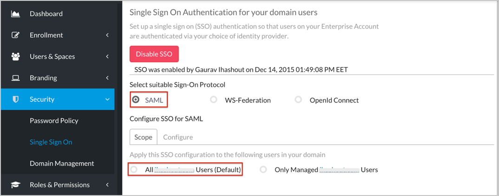
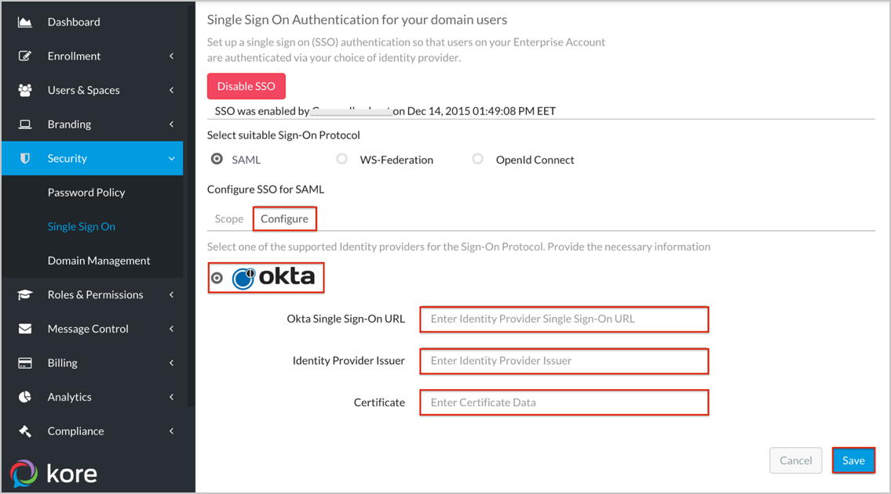
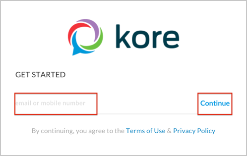

Login to Kore as an Administrator.
Navigate to Security > Single Sign On, then select Enable SSO:

Select SAML as the Sign-On Protocol.
Under the Scope tab, select who the SSO configuration will apply to. In our example, we selected All Users:

Select the Configure tab, then enter the following:
Select Okta as identity provider.
Okta Single Sign-On URL: Copy and paste the following:
Sign into the Okta Admin Dashboard to generate this variable.
Identity Provider Issuer: Copy and paste the following:
Sign into the Okta Admin Dashboard to generate this variable.
Certificate: Copy and paste the following in text format:
Sign into the Okta Admin Dashboard to generate this variable.
Click Save.

Done!
Notes:
SP-initiated flows and Just In Time (JIT) provisioning are supported.
IdP-initiated flows are not supported.
For SP-initiated Flows:
Open the Kore login page (https://app.kore.com/)
Enter your email address.
Click Continue.
